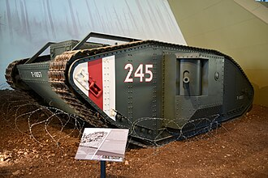
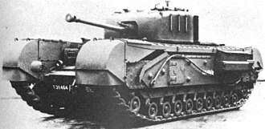
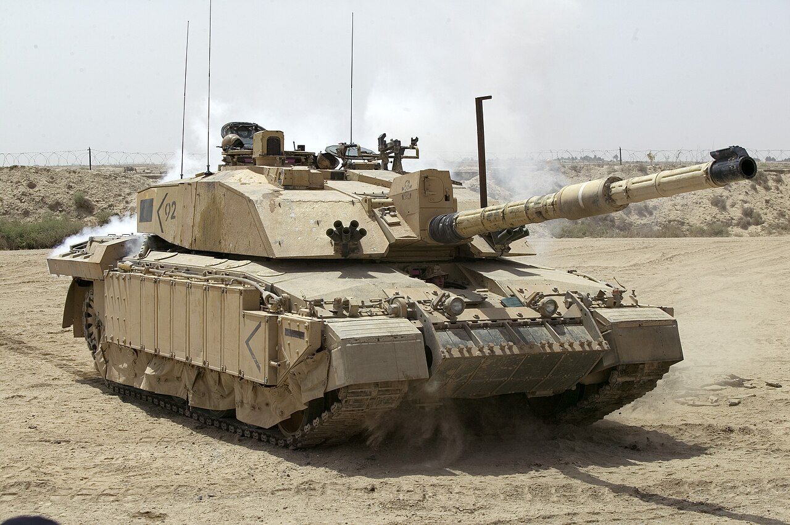

The Mark I was the world's first tank to be used in combat. ring World War I, armies were stuck in trench warfare. The British wanted a vehicle that could: Cross trenches,Crush barbed wire, Protect soldiers from machine-gun fire. The result was the Mark I, with its distinctive rhomboid shape that allowed it to climb over obstacles. The Mark I first saw action during the Battle of the Somme on 15 September 1916. Although many broke down mechanically, the tanks demonstrated that armored vehicles could cross terrain that was difficult for infantry. And so armored vehicle became a huge part of the future war, and especially during ww2 with the whole blitzkreig doctrin.
The Churchill tank was one of Britain's most important tanks of World War II. Named after Winston Churchill, it was designed as an infantry tank a heavily armored vehicle meant to support advancing soldiers not to go 1 on 1 with other tanks. The Churchill wasn't particularly fast, but it had: very thick armor for its time, excellent ability to climb steep slopes and cross rough terrain, a large chassis that could be adapted for many specialized roles which made it have 20+ versions.
The Challenger 2 is the modern main battle tank used by the British Army entered service in the mid-1990s and still in service today. The Challenger 2 is best known for: very strong protection its “Dorchester” composite armor is among the best in NATO Extremely good crew survivability design, high accuracy at long range with its rifled gun, strong reliability record in operations It has served in: Bosnia and Kosovo peacekeeping, Iraq War, but also in Ukraine where it was proved to be highly effective.